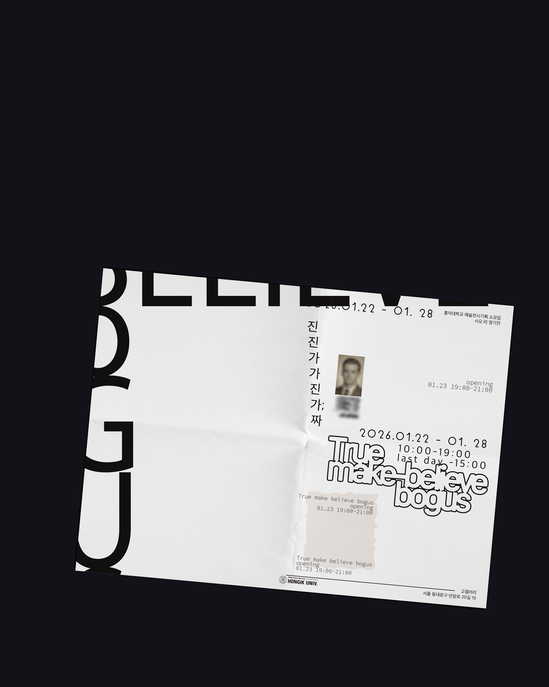
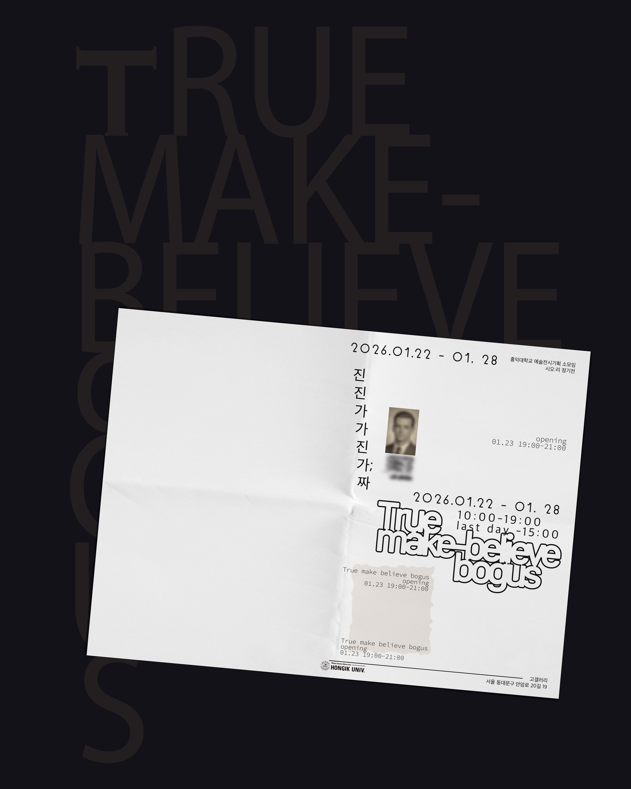

진짜와 가짜는 사실 여부를 판단하는 아주 일상적인 언어이자, 인간이 끊임없이 참됨을 욕망해온 흔적이다. 그러나 오늘날 이 구분은 더 이상 자명하지 않다.
전시 제목인 《진진가가진가:짜》는 진짜(眞짜)와 가짜(假짜)를 뒤섞은 것으로 참여 작가들이 인식하는 세계가 이미 혼성적이고 불확실한 차원에 놓여 있음을 드러낸다.
동시에, 개념의 울타리를 만들어 경험 가능한 모든 카오스적 현상의 내외부를 구분하려는 우리의 설명욕구를 가시화하는 것이기도 하다.
전시는 홍익대학교 미술대학 공식 전시기획 소모임 시오:리에서 17인의 작가와 16점의 작품이 참여한다.
작업들은 오늘날의 급속한 변화들을 진짜와 가짜라는 틀을 이용하여 지각하는 모양새를 들여다보기로 한다.
이는 오랜시간 시각예술의 영역에서 논의되어온 리얼리티와 픽션, 복제와 재현 등의 문제를 다시 환기하며, 주변의 다양한 현상을 관찰하고 재현하는 개별 방법론적 실험으로 이어진다.
매체의 지속적인 발전은 오늘날의 시각문화를 점점 더 고도로 매개된 형태로 만들고 있다.
이때, 우리가 접하는 시각 정보는 어느정도까지 리얼리티일까?
이러한 현실 속에서 우리는 진짜와 가짜 사이를 가로지르는 무의식적인 믿음들을 비판적으로 성찰함으로써, 매개된 리얼리티 속에서 우리가 다시 세계를 인식하고 재구성할 수 있는 가능성을 보게 된다.

